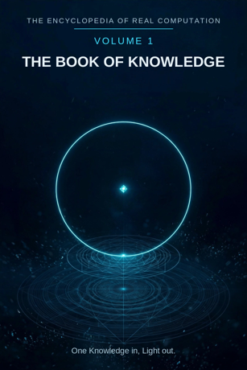

Chron.
The Encyclopedia of Real Computation

One Knowledge in, Light out.
Home domain: the whole grid - this volume is the key to it
One Knowledge in, Light out.
◉ A Principle .... Knowledge ◎ B Purpose ...... Question ◉·◉ A.A Alpha ...... the Knower ◉·◎ A.B Cross ...... Curiosity △ X Primitive .... Fact ⚙ Y Protocol ..... Inquiry ⬢ Z Product ...... Understanding ◐ i State ........ Ignorance ⚖ j Condition .... Verification ⊞ N Set .......... the Fields ◷ h Time ......... Memory ▣ C Context ...... the Library ▦ D Domain ....... the Body of Knowledge ♥ E Emotion ...... Wonder ➤ F Intention .... Teaching ↻ pi Cycle ........ the Tradition ➔ phi Step ......... the Lesson ⚄ e Probability .. Confidence • h-bar Planck ..... the Datum
Σ sigma Summation .. the Encyclopedia
◈ gamma Scale ...... Depth Δ delta Change ..... Revision ⁂ sigma' Options ... Questions Ω Omega Answer ..... Light
Every volume of this encyclopedia does the same work: a Prologue that figures the subject whole, twenty-four chapters one per term, the Data figured whole, the Crossings, and the Sum. This first volume is the key to the other seventeen, so it carries three extra parts in front: the Computational Model itself (Part A), the Computation of Dimensions (Part B), and the Computation of Real Numbers (Part C). Then comes the Prologue proper - the Computation of Knowledge (Part D) - and the index of its twenty-four term chapters, which stand in full in the Book of Knowledge document. The running example of the Knowledge computation is a boiling kettle: water, heated, watched, and understood.
Given a term - any word - the model figures it completely, the same way every time. The grammar, with its operators:
Given A to B, then X & Y is Z, or i while j for N, through h, in C, D, E, F, at pi by phi, with e over h-bar - sum sigma, scale gamma, change delta, options sigma' - therefore Omega.
The operators are the small words, and each one is a logic move: to (aim), then (build), & (join), is (equate), or (the other branch), while (under a condition), for (on behalf of the set), through (across time), in (inside the setting), at (on the cycle), by (step by step), with (carrying the odds), over (measured against the smallest unit), sum, scale, change, options (the closing operations), therefore (the answer).
◉ A Principle - the term itself. A = A. ◎ B Purpose - B = the root of A. The purpose is the root of the
principle: what the term is for, drawn out of it. f Function - f = the root of B. (Lowercase f, the working function; uppercase F is Intention.)
△ X Primitive - X = A times N. The principle multiplied by the
set: its raw material.
⚙ Y Protocol - Y = f(X). The function applied to the primitive:
the method.
⬢ Z Product - Z = X times Y. Primitive times protocol: this &
that is something else.
◐ i State - i = the root of negative A. The shadow: the
principle's negative root, what it is when it fails or is absent.
⚖ j Condition - j = the root of negative n. The condition
governing the shadow branch.
⊞ N Set - N = {1, 2, 3} gathered. Who and what the figuring is
for.
◷ h Time - h = 2 pi times h-bar. Time: the smallest tick,
carried all the way around.
▣ C Context - C0 = D, and C1 = C0 + F. The context starts as the
domain and is moved by intention.
▦ D Domain - D = N x R. The set crossed with every positive
output: the whole field.
♥ E Emotion - E = C1 - C0. The difference between contexts, felt. ➤ F Intention - F aims C at B. The operation that transforms the
context toward the purpose.
↻ pi Cycle - pi = C/d. The context measured against what never
changes: what repeats.
➔ phi Step - phi = next - now. One step forward. ⚄ e Probability - e = outcomes/chances. The odds riding on the
figuring.
• h-bar Planck - h-bar = h/2 pi. The smallest unit: one moment,
one mark, one bit. Σ sigma Summation - sigma = the set, summed. In the model's reading, each completed row reads +1.
◈ gamma Scale - gamma = the thing at its own measure.
Δ delta Change - delta = new - old. Change, made visible.
⁂ sigma' Options - sigma' = the spread of the probable. Every
maybe, kept. Ω Omega Answer - Omega = the whole figuring, closed. In the engine's values it lands at about 4.0641; in words it lands on the answer-term - and the end loops to the beginning.
Two more figures stand over the twenty-two in every computation: A.A, the Alpha - the principle turned on itself, the maker beneath the term (for Knowledge, the Knower) - and A.B, the Cross - principle crossed with purpose, where every product is born. About the numbers, plainly: the arithmetic runs on fixed values (A = 1, the set {1, 2, 3}), so the skeleton is the same for every term. The words carry the meaning. The skeleton is arithmetic; the flesh is language; the figuring is the two moving together.
3 - the seed: A, B, and the root between them. 8 - the core eight: A, B, X, Y, Z, i, j, N. 12 - the setting added: C, D, E, F. 16 - the rhythm and measure added: pi, phi, e, h-bar - the sixteen of the old book's 16-bit core. 21 - the closing five added: sigma, gamma, delta, sigma', Omega. 22 - Time counted in full: h completes the twenty-two.
Take the identities, join them with the operators, and the equations read as rational prose: the premise (A to B - the term aimed at its purpose); the construction (X & Y is Z - the product equated, in words); the shadow branch (or i while j for N - what happens in the negative, under its condition, for the set); the setting (through h, in C, D, E, F); the rhythm (at pi by phi); the odds (with e over h-bar); the close (sum sigma, scale gamma, change delta, options sigma' - therefore Omega). Example, Coffee: "If Coffee to Wakefulness, then Beans & Brewing is Cup, or Empty while Hot for Roasts, through Time, in Kitchen, Cafe, Comfort, Ritual, at Refills by Sip, with Chance over Bloom - sum Pot, scale Strength, change Cooling, options Blends - therefore Morning." Every clause of that sentence is one of the equations above, with Coffee's words standing in them.
After the statement, the figuring becomes data. The D matrix (N x R): the set crossed with the outputs, rendered as a word table - one figured word in every cell. The CDEF table: the contexts listed, each with its E (the difference that context makes) and its F (the operation it runs); same object, new context - E measures the change, F performs it (C1 = C0 + F). The readings: rows at +1, the whole matrix a singularity at +1 - the model's own way of saying: many crossings, one thing.
The originals stand: each computation keeps its own figured terms. What the laws add is derivation - the proven laws of mathematics, the floor, applied to the seed identities A and B. The seed derivations first: A.A is the Alpha, the principle of the principle, what everything is figured from. B.B = A: purpose pursued on purpose lands back on principle. A.B is the Cross, counted twice in the binomial square, met from both sides. Then the seven laws, each run the same way - state the equation, read it in the model's letters, name what it gives, name where it stops:
1. Pythagoras. A squared + B squared = C squared: Principle squared + Purpose squared = Context squared. Proof by triangulation and congruence - the triangle drawn three times, as Where, as If, as Data, overlaid corner for corner. 2. Law of cosines. The angle between Principle and Purpose is the Context's tilt; F tilts the angle. 3. Binomial. (A + B) squared = A squared + 2AB + B squared: the Alpha, the Cross counted twice, the Principle returned. The Product lives in the middle term. 4. AM-GM. B is the geometric mean between the Principle and the One - Purpose is the mean proportional, the value between the term and unity. 5. Log law. gamma(Z) = gamma(X) + gamma(Y): the Scale of the Product is the Summation of the Scales. gamma is the translator between Z's multiplication and sigma's sum. 6. Complex modulus. The State - the shadow - is a component of the figure's size: the shadow adds to the measure, it does not subtract from it. 7. Triangle inequality. The Context lies between the difference and the sum of Principle and Purpose: the model's built-in critique of oversized answers.
Where a law stops: commutativity. In numbers X times Y = Y times X; in words, order carries meaning, so the skeleton commutes and the flesh doesn't, and the model says so.
The model's claim, in one line: anything can be figured. The model does not replace mathematics; it borrows mathematics' grammar - equating, rooting, summing, spreading - and does for meaning what equations do for numbers. Its whole method is one sentence long: this & that is something else - said carefully, in order, twenty-two ways, until the answer stands up.
The Identities Square is the where identities of the where identities: 22 rows by 22 columns, 484 cells, every one figured. Each row takes one variable as the seed of its own computation; each column is one of the 22 dimensions it is read through; each cell is that dimension figured in that seed's own words. Read a row across: one identity, whole. Read a column down: one dimension, as every identity holds it.
The inner 16 by 16 - rows and columns A, B, X, Y, Z, i, j, N, e, C, D, E, F, pi, phi, h-bar - is the Book of Knowledge's 16-bit core (the 4x4 matrix: Principle, Operation, Set, Context). The closing five (sigma, gamma, delta, sigma', Omega) and h complete the twenty-two.
The diagonal - a seed read through itself - returns each identity home: Principle through Omega is the Constitution; Probability through e is Confidence; Planck through h-bar is the Bit; Change through delta is Acceleration; Options through sigma' is Second Thoughts; Answer through Omega is the Final Word - and the Final Word loops back to A, a principle again.
Three checks stand over the square. Root check: every row's B is its root of A - square any row's Purpose and the row's Principle returns. 22 of 22. Loop check: every row's Omega resolves into a form that can seed the next computation - the Constitution, Fulfillment, the Instrument, the System, the Brand, the Character, the Standing, the Whole, the Story, Meaning, the Kingdom, Peace, the Act, Recurrence, the Arrival, the Result, the Floor, the Bottom Line, the Ratio, the New Order, the Pick, the Final Word. 22 of 22. Congruence: each row's triangle - Where, If, Data - drawn three times, corner for corner, the same 22 words; the square is its own Data table, so the third drawing is the square itself.
The seven laws stand over the square as its Proofs, as in Part A: each row triangulates (Pythagoras); the tilt between a seed and its purpose is read in the row's Context cell (law of cosines); every row squares with its Cross counted twice (binomial); the B column is the geometric-mean column of the whole square (AM-GM); the gamma column translates every product in the Z column into a sum of degrees (log law); the i column adds every identity's shadow to its size - 484 includes the shadows (complex modulus); and no cell in a row may outweigh the row's seed and purpose together (triangle inequality) - where a word would break the bound, the row is misfigured and gets refigured, not shipped.
One Identity in, its Whole Row out - 22 times over, the Model out.
N is the natural set: 1, 2, 3, and on - the counting numbers, gathered. R is the real side: every positive measure, whole and fraction and irrational together, the continuous line the counts are laid on. A computation's set lives in N; its outputs live in R. The Domain is the crossing of the two: D = N x R - the set, crossed with every positive output.
Two readings of a set stand side by side in this model, and neither cancels the other. The tally: the plain sum - {1, 2, 3} tallies to 6. The sigma-reading: a completed set, read whole, reads +1 - one set, entire. The tally counts the points; the reading says what the points amount to together.
Take the diagonal of a unit square. By Pythagoras its length squared is 1 + 1 = 2, so the length is the number that squares to 2. Now hunt for that number inside N, and then inside the fractions. It is not there: if a fraction in lowest terms squared to 2, both its numbers would have to be even - and lowest terms cannot both be even. The proof is short, checkable by anyone, and settled for over two thousand years (it is worked in full in Volume 2, Mathematics). So the diagonal - a plain length, in a plain square - falls between every pair of fractions. N cannot hold it, and the fractions cannot hold it. The set must be laid on R, the real line, where the root of 2 has its address. That is why every Domain in this encyclopedia is N x R and not N alone: the geometry demands the reals, and the demand is proved, not assumed.
Omega, the Answer, is read in the limit as h-bar - the least unit, h/2 pi - shrinks toward zero: the sum taken at the finest grain there is. In the engine's fixed values the closed figure lands at about 4.0641; in words it lands on the volume's answer-term. The original Book wrote the Sum's equation once, at the front, and Part D's Closing below repeats it: Omega = the limit, as h-bar goes to 0, of Sigma [ (Gamma(E) x Delta(F)) / sigma(e) ] over h-bar. Real numbers are what make that limit statable: a total defined not at a coarse count but at the least-piece grain, on the line, where every point of knowledge can have an address.
Knowledge: what is known - fact taken in by inquiry until it stands as understanding. It is the subject the whole system is about: the Book of Knowledge is this computation, bound. (Core figured 2026-10-04 and kept as canon; completed to the full twenty-two on 2026-10-23.)
◉ Knowledge. ◎ Question = the root of Knowledge: knowledge aimed
at itself is a question; a question squared is knowledge again. (The grammar proving itself: the Purpose of Knowledge is the Question, and its Options are Questions too - knowledge opens more than it closes.) ◉·◉ the Knower: Knowledge times itself.
◉·◎ Curiosity: Knowledge crossed with Question - the living
middle term, where all the work happens. △ Fact = Knowledge parted over the Fields. ⚙ Inquiry = the function of the Fact: the working of a fact until it yields. ⬢ Understanding = Fact times Inquiry: a fact inquired into, understood. ◐ Ignorance = the root of negative Knowledge: knowledge's own shadow, counted in its measure. ⚖ Verification = the root of negative n: knowledge stands while it is checked. ⊞ the Fields: the set knowledge gathers into. ◷ Memory: knowledge carried through time. ▣ the Library: where knowledge is kept and met. ▦ the Body of Knowledge = the Fields crossed by the Study. ♥ Wonder: the difference knowledge makes when it lands. ➤ Teaching: knowledge intends to be passed on. ↻ the Tradition: knowledge handed round, generation to generation. ➔ the Lesson: knowledge moves one lesson at a time. ⚄ Confidence: how sure the knowledge is held to be. • the Datum: the smallest piece - one point of knowledge, one address on the grid. Σ the Encyclopedia: all of it, summed into one work. ◈ Depth: knowledge scales by how deep it goes. Δ Revision: knowledge changes by being corrected.
⁂ Questions: the spread of what is still open. Ω Light:
knowledge resolved is light to see by - and light shows the next question, so Omega loops back to A by way of B.
IF If Knowledge to Question, then Fact & Inquiry is Understanding, or Ignorance while Verification for the Fields, through Memory, in the Library, the Body of Knowledge, Wonder, Teaching, at the Tradition by the Lesson, with Confidence over the Datum - sum the Encyclopedia, scale Depth, change Revision, options Questions - therefore Light.
Stands below in this Part, figured whole: the sixteen Fields, the Fields crossed by the Study in sixty-four cells, and the six contexts of Knowledge as transformations.
The seven laws, run on this seed. Pythagoras: Knowledge squared plus Question squared overlays the Library squared - the triangle checked in the Where, the If, and the Data identically. Law of cosines: the tilt between knowledge and its question is set by context - in the Mind the angle is open, in the Laboratory it is the tilt of doubt. Binomial: the middle term is Curiosity, counted twice - knowledge shapes the question, and the question reshapes the knowledge. AM-GM: Question is the geometric mean between Knowledge and the One. Log law: Depth of Understanding is Depth of Fact plus Depth of Inquiry - depth adds where work multiplies. Complex modulus: Ignorance is counted in the size of knowledge; a knower's true measure includes the honest size of what they do not know. Triangle inequality: no route from Fact to Understanding is shorter than Inquiry; skip it and you hold a claim, labelled as such at sigma'.
Knowledge begins as questions. Parted over its sixteen fields, it arrives as facts - one true thing at a time, conditions attached, checkable by a stranger. Worked by inquiry - repeated, varied, compared, recorded - the facts set into understanding, which can travel where a fact can only be carried. The whole stands while verification stands: checked again, by anyone, at any time, each fact at its own address, with its ignorance counted beside it in the measure rather than hidden from it. Memory carries it through time; the Library keeps it where it can be met; teaching hands it on, one lesson at a time, down the Tradition. Summed, it is the Encyclopedia; scaled, it has Depth; changed, it is Revision; and at its edge it opens into more Questions than it began with - which is the grammar proving itself, since the Question was its Purpose from the first line. Resolved, knowledge is Light: not the end of the questions, but the state in which they can be seen. One Knowledge in, Light out.
N - THE FIELDS, THE COMPLETE SET (16). Each field: what it studies, and its home domain on the grid. The set as figured is entire; new fields join as new elements, the set stays open underneath.
MATHEMATICS ... Number and form - home: Logic
LOGIC ......... Valid reasoning - home: Meta PHYSICS ....... Matter and motion - home: Physics CHEMISTRY ..... Substances and their changes - home: Physics
EARTH SCIENCE . The planet and its depths - home: Topos
ASTRONOMY ..... The heavens - home: Physics BIOLOGY ....... Living things - home: Biology MEDICINE ...... Health and healing - home: Biology THE MIND ...... Thought and behaviour - home: Cognition SOCIETY ....... People together - home: Sociology HISTORY ....... What happened - home: Chronos PHILOSOPHY .... The deepest questions - home: Transcendence LANGUAGE ...... Words and meaning - home: Dialectics ART ........... Expression - home: Aesthetics MUSIC ......... Sound in time - home: Aesthetics THE CRAFTS .... The made things - home: Technics
D = N x R - THE FIELDS BY THE STUDY (64 CELLS, WHOLE). The Study runs in four movements: the QUESTION the field asks, the FACT it establishes, the UNDERSTANDING it reaches, the TEACHING it hands on.
MATHEMATICS ... Question: the Problem - Fact: the Theorem - Understanding: Necessity - Teaching: the Exercises
LOGIC ......... Question: the Puzzle - Fact: the Inference -
Understanding: Coherence - Teaching: the Syllogism
PHYSICS ....... Question: the Phenomenon - Fact: the Law -
Understanding: the Mechanism - Teaching: the Experiment
CHEMISTRY ..... Question: the Mixture - Fact: the Compound -
Understanding: the Bond - Teaching: the Synthesis EARTH SCIENCE . Question: the Landform - Fact: the Strata - Understanding: the Slow Change - Teaching: the Survey
ASTRONOMY ..... Question: the Star - Fact: the Orbit -
Understanding: the Cosmos - Teaching: the Observation
BIOLOGY ....... Question: the Species - Fact: the Specimen -
Understanding: the Lineage - Teaching: the Field Study
MEDICINE ...... Question: the Symptom - Fact: the Diagnosis -
Understanding: the Cause - Teaching: the Cure
THE MIND ...... Question: the Behaviour - Fact: the Case -
Understanding: the Pattern - Teaching: the Insight
SOCIETY ....... Question: the Custom - Fact: the Count -
Understanding: the Institution - Teaching: the Policy
HISTORY ....... Question: the Event - Fact: the Record -
Understanding: the Meaning - Teaching: the Chronicle
PHILOSOPHY .... Question: the Question Itself - Fact: the
Argument - Understanding: the Position - Teaching: the Dialogue
LANGUAGE ...... Question: the Word - Fact: the Grammar -
Understanding: Meaning - Teaching: the Translation
ART ........... Question: the Vision - Fact: the Work -
Understanding: the Beholding - Teaching: the Critique
MUSIC ......... Question: the Sound - Fact: the Score -
Understanding: the Harmony - Teaching: the Rehearsal
THE CRAFTS .... Question: the Material - Fact: the Made Thing -
Understanding: the Know-How - Teaching: the Apprenticeship
Sigma-reading: each row +1 (one field, whole across its study); the whole matrix +1 - one Body of Knowledge.
THE CONTEXTS OF KNOWLEDGE, AS TRANSFORMATIONS (6). Matrix(C) = Matrix(the Mind) + F; E is the difference each context makes. The Mind is the base context - the domain as figured.
THE MIND (base) ... E Wonder, F Learning - gives THE BODY OF
THE SCHOOL ........ E Discipline, F Teaching - gives THE
THE LIBRARY ....... E Quiet, F Keeping - gives THE ARCHIVE THE LABORATORY .... E Doubt, F Testing - gives THE EVIDENCE THE WORKSHOP ...... E Pride, F Making - gives THE KNOW-HOW THE WORLD ......... E Consequence, F Applying - gives THE
Read across: the same knowledge, carried into the Laboratory, comes out as Evidence - because Doubt, working by Testing, is the difference the Laboratory makes. That difference is E; the working is F; the carried domain is C at work.
The sigma of the Knowledge computation, taken as a seed of its own - the recursion one level down (Knowledge.Encyclopedia).
GIVEN. Encyclopedia: a work that sets out to hold all knowledge between covers, arranged for finding. The word itself is Greek - enkyklios paideia, "the circle of learning": all the fields, in one ring.
WHERE. ◉ Encyclopedia. ◎ Reference = its root: an encyclopedia exists to be consulted; squared, reference upon reference is the encyclopedia again. ◉·◉ the Encyclopedist: the encyclopedia turned on itself, its makers. ◉·◎ the Entry: encyclopedia crossed with reference - the one article, read, the fruit the whole work exists for. △ Articles = the encyclopedia parted over its subjects. ⚙ Compilation = the working of articles into order. ⬢ the Volumes = Articles times Compilation, bound.
◐ the Omission = the root of negative Encyclopedia: its shadow -
everything left out, and everything it got wrong, counted in its measure. ⚖ Currency: it stands while it is current. ⊞ the Subjects: everything, A to Z. ◷ the Edition: an encyclopedia's time is told in editions. ▣ the Reading Room. ▦ the A-Z = the Subjects crossed by the finding-order. ♥ Authority: the difference it makes - it settles the argument. ➤ Completeness: it intends to leave nothing out. ↻ the Update: edition after edition, the ring closes again. ➔ the Lookup: it is used one lookup at a time. ⚄ Accuracy: the odds that what it says is right. • the Headword: the smallest unit - the one word an entry hangs on. Σ the Complete Set: all the volumes, summed, on one shelf. ◈ Scope: how much of the world it covers. Δ Revision: it changes by being revised. ⁂ the Other Encyclopedias: every rival ring of learning. Ω the Printed Sum: all knowledge, summed and printed - which points back up to Knowledge itself, whose sigma this is.
IF. If Encyclopedia to Reference, then Articles & Compilation is the Volumes, or the Omission while Currency for the Subjects, through the Edition, in the Reading Room, the A-Z, Authority, Completeness, at the Update by the Lookup, with Accuracy over the Headword - sum the Complete Set, scale Scope, change Revision, options the Other Encyclopedias - therefore the Printed Sum.
One Encyclopedia in, the Printed Sum out.
The twenty-four chapters stand in full in the Book of Knowledge document; their contents are indexed here. Each chapter does the same four jobs for its term: what the term means in plain English, where it sits in the computation (its equation), how it works in real knowing - the boiling kettle is the running example of them all - and what breaks without it.
----------------------------------------------------------------------
----------------------------------------------------------------------
Knowledge is everything that is known - not one fact and not one field, but all of it together, the whole body that facts belong to, and the subject of the entire book. It is the seed: the Question is its root, the Knower its self-product, Curiosity its cross, and run whole it resolves into Light. The chapter works the kettle fact - water boils at 100 degrees Celsius at sea level - through every term that will follow.
A question is knowledge aimed at what it does not know yet: B = the root of A, and squared - fully worked - it returns as knowledge. The Purpose of Knowledge is the Question, and its Options are questions too, so the grammar proves itself at both ends of the figure. A sharp question is specific, testable, and already holds half its answer inside the asking.
The Knower is knowledge turned on itself - A times A - the one who holds the knowledge, aware that they know and of the edges of what they do not. The same fact is held differently by different knowers: the student holds the sentence about the boiling point; the boilermaker holds the sentence, the feel of the gauge, and the mountain exception with it. Strike the Knower and knowledge is unowned paper.
Curiosity is knowledge reaching for its question - A times B, the interaction term, counted twice because knowledge shapes the question and the question reshapes the knowledge. It is a product, not a mood: double either factor and it doubles; set either to zero - facts with no questions, questions with no knowledge - and the product is zero. Understanding is always born in this middle term.
----------------------------------------------------------------------
----------------------------------------------------------------------
A fact is one true thing at a time: X = A times N, knowledge parted over its fields, arriving one piece per place. A real fact is a small complete package - one thing, stated exactly, with its conditions attached ("at sea level" is part of the boiling fact, not a footnote to it), checkable by a stranger. The Making only takes the testable kind.
Inquiry is the working of a fact until it yields: Y = f(X), with f the root of the Purpose - the Question, set to work. It repeats, varies one thing at a time, compares against honest standards, records in tables that do not flatter, and sharpens the question as it goes. A claim honestly broken by inquiry is inquiry succeeding, not failing.
Understanding is a fact worked until it makes sense: Z = X times Y, area-shaped, with extent - and it factors back, so any understanding can be audited for its facts and its working. The test of it is travel: a fact can only be carried, but the boiling understanding predicts the pressure cooker it never met. Strike Z and the Making makes nothing.
----------------------------------------------------------------------
----------------------------------------------------------------------
Ignorance is what is not known: i = the root of negative A, knowledge's own shadow, generated by the figure itself and counted in its measure by the modulus law. Known ignorance has a shape a Question fits; unknown ignorance is silent exactly where it is largest, and is why Verification never retires. The shadow is counted, or the light is lying.
Verification is the standing arrangement that a fact can be tested again, by anyone, at any time: j = the root of negative n, taken one element at a time - this fact, this address, this claim. Knowledge does not get verified once and relax; it stands while verified, the way a bridge stands while its rivets hold. Confidence is nothing but verification's running score.
The Fields are the great divisions knowledge sorts itself into: sixteen of them, figured entire in Part D, each a family of facts sharing a subject, a method, and a standard of proof. N is the quiet term in every equation - facts are parted over it, the Domain is built from it, the sum runs over it. The set is complete as figured and open underneath: new fields join as new elements.
----------------------------------------------------------------------
----------------------------------------------------------------------
Memory is knowledge carried through time: a fact known for one instant and lost was a glimpse, not knowledge. h is the passage the whole figure moves through - through Memory, in the Library
- and the one term no operation in the computation can reverse.
Whole fields are memory technologies; History is memory disciplined into a method, and the Tradition is memory with hands.
The Library is where knowledge is kept and met: C, the Context, first of the setting terms. Contexts transform - C1 = C0 + F - so the same Body of Knowledge becomes the Curriculum in the School, the Evidence in the Laboratory, the Practice in the World. E, the difference a context makes, only exists because C gives differences somewhere to be measured between.
The Body of Knowledge is the whole territory: D = N x R, the Fields crossed by the Study, all sixty-four cells figured in Part D. It is called a body deliberately - parts doing different work, growth, injury in one place and health in another, and value living in the relations between parts. In the base context C0 = D: the territory and its standing-place coincide.
----------------------------------------------------------------------
----------------------------------------------------------------------
Wonder is the difference knowledge makes when it lands: E = C1 - C0, the delta between the context of not-knowing and the context of knowing. It is a measurement, not decoration - the same fact can land flat on one knower and rearrange another's whole inner skyline, because the difference is between the two standings. A lesson that produces no difference has, by the figure's own arithmetic, not yet taught anything.
Teaching is knowledge meant to be passed on, and doing the passing: F, the Intention, the operator that moves contexts - apply Teaching to the base context and the Body of Knowledge becomes the Curriculum. It is the one operation that increases the total knowledge in the world without finding anything new, because a knower has been added to. Facts with no inquiry invited build a warehouse in someone else; wonder with no facts under it leaves the learner lit up and empty.
----------------------------------------------------------------------
----------------------------------------------------------------------
The Tradition is knowledge handed round, generation to generation: Teaching repeated until it closes into a cycle, each holder re-verifying the cargo by using it. pi is where Memory compounds - a tradition is memory with a period, its reviews and retellings a schedule for Verification. It preserves what is used and lets the unused fade; the Library beside it keeps what hands might need.
A lesson is one step of knowledge: phi, the Step - not the amount that can be said in one move, but the amount a learner can take hold of, work, and stand on before the next step. The cycle turns by the step - at the Tradition by the Lesson - and the step is a property of the climbing, not of the staircase: the same knowledge, stepped wrongly, does not arrive.
Confidence is how sure a piece of knowledge is held to be: e, the odds, riding over the Datum - every point of knowledge carries its odds with it, as every fact carries its conditions. It is Verification's running score, honest in both directions: printed higher than the checking earned is boasting; printed lower hides bedrock learners need to stand on. Without it the map cannot distinguish bedrock from guess.
A datum is one point of knowledge - the least piece there is: one reading, one observation, one entry at one address. Alone it claims almost nothing, and that is its honesty; fenced together by the hundred, data are what facts are built of. h-bar is the floor of resolution: the Sum is taken at this grain, and the grid's addresses are addresses because a datum is what an address holds.
----------------------------------------------------------------------
----------------------------------------------------------------------
The Encyclopedia is all of knowledge gathered into one work: sigma, the total taken over the Set - whole, every field, none sampled. It is the inverse of the parting that made Facts; the figure breathes out at X and in at sigma. Its two clauses are completeness and findability, and its deepest use is as a check on the parts: laid out in one ring, the gaps show their shapes.
Depth is how far down a piece of knowledge goes: gamma, the Scale and the translator - by the log law, gamma(Z) = gamma(X) + gamma(Y), so depth adds where facts multiply. Its test is the chain of whys: how many a piece of knowledge can answer in a row, and whether it names the floor honestly where the reasons stop. Deep is not better in itself; gamma measures, it does not rank.
Revision is knowledge corrected, and better for it: delta, Change - applied after the sum and the scale are known, in full view of the whole, not change for its own sake. Verification finds the fault; Memory keeps both the correction and the fact that a correction occurred; the errata is part of the record. Knowledge that cannot be corrected cannot be trusted.
Questions, plural, are everything still open: sigma', the spread, standing last before the Answer by the book's discipline, so no answer is printed looking more final than it is. Answers do not consume questions; they mint them, at a profit - the kettle work began with one question and ends holding sharper ones. A field whose spread has collapsed has not finished; it has stopped.
Light is knowledge resolved: not a fact, not a sum, but the condition of being able to see - the same kettle, in a lit room, its sounds meaningful and its unknowns shaped. Omega is the limit of the whole figure, non-negative by the model's ruling: shadows are counted all through the figure and the resolution they feed is Light. And Omega loops back to A by way of B - Light shows the next Question. One Knowledge in, Light out.
Twenty-four chapters stand behind this page, each one a term of a single computation, and the computation was always about one thing: Knowledge - Question its purpose, Fact its pieces, Inquiry its work, Understanding its product; Ignorance its shadow, Verification its condition, the Fields its set; Memory its road through time, the Library its keeping, the Body its territory; Wonder its landing, Teaching its intention; the Tradition its cycle, the Lesson its step, Confidence its odds, the Datum its least piece; the Encyclopedia its sum, Depth its scale, Revision its change, Questions its options - and Light its answer.
Now the Sum, computed the way this system computes everything: in two lanes, side by side, neither cancelling the other.
THE TALLY LANE. Count the possible knowledge as the map lays it out: every field read through every dimension - 22 x 16 = 352 figures. Every point placed on the grid - 16 domains x 16 contexts x 16 sets = 4,096 addresses (16,384 on the wider printing of the original book; the ruling between the two printings stands open, and both numbers are printed here because both are the book's own). Every dimension read through every dimension - 22 x 22 = 484 identities. The tally is finite, and large, and honest about its edges: the set of fields is open underneath, the addresses hold more than has been found, and the questions at sigma' outnumber the answers at Omega. The tally says: this much, at least, is the shape of what can be known.
THE SIGMA LANE. Read in the model's own way, each complete row sums to +1, and the whole grid - all fields, all dimensions, all addresses together - sums to +1. One knowledge, whole. The tally counts the points; the reading says the points were never separate. Both lanes stand, because the tension between them is not an error in the system - it is the system, saying the truest thing it knows in its two native voices: knowledge is many, and knowledge is one.
THE EQUATION. The original book wrote it once, at the front: Omega = lim (h-bar -> 0) Sigma [ (Gamma(E) x Delta(F)) / sigma(e) ] over h-bar. Everything, resolved at the finest grain there is - the total taken as the observation moment shrinks to the least unit, every field's wonder and revision weighted by its spread, summed entire. This volume has been that equation, unfolded.
ITS OPEN QUESTIONS (sigma', carried to Volume 18): which printing of the address grid stands - 4,096 or 16,384 - and the whole spread the twenty-four chapters opened and did not close.
The Answer loops back to the Root. Light shows the next Question; the Question roots the next Knowledge; and the figure stands ready to run again, on any subject, in any field, at any address - a whole that can be entered by any knower, at any datum, one lesson at a time.
One Knowledge in, Light out.
ADDRESS INDEX: this volume's terms stand across the whole grid - it is the key volume, and its Knowledge computation addresses the 4,096 named points (16 domains x 16 contexts x 16 sets; 16,384 on the wider printing, the ruling between the printings still open). The full address index of every volume stands in Volume 18.
GLOSSARY: computation - one term figured whole through the twenty-two variables. datum - one point of knowledge, one address. tally lane - the plain count of a sum. sigma lane - the reading of a completed whole as +1. address - a point's place on the grid of domains, contexts, and sets. congruence - the proof check: the same figure drawn as Where, If, and Data, overlaid corner for corner.
ICON TABLE: stands at the front of this volume, in the Volume at a Glance, and of every volume, identical.